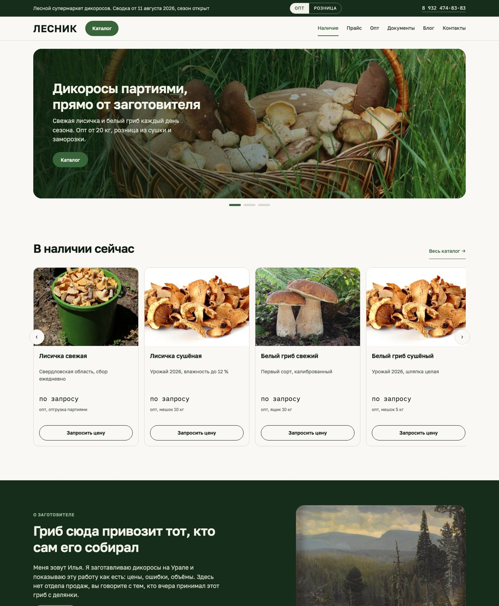
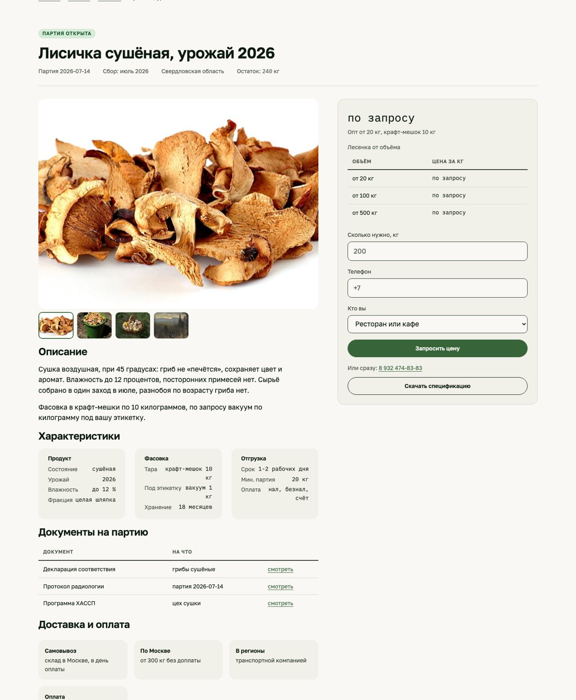
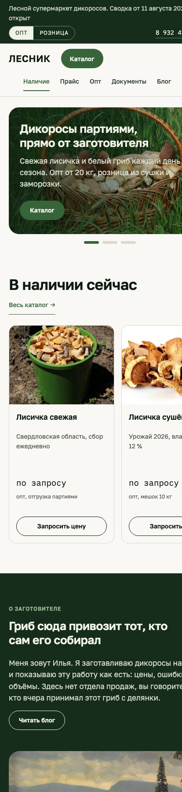
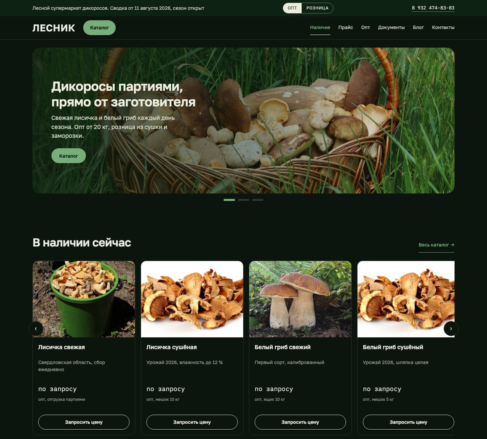

Витрина партий с открытой ценой и остатком, опт и розница, SEO и аналитика. Вы занимаетесь заготовкой, всё остальное по сайту делаем мы: тексты, картинки, настройку сервисов и запуск.
Для Ильи, @lesnik_rf · «Свежие грибы здесь»
8 235 подписчиков в Instagram и канал в Telegram уже приводят закупщиков. Дальше всё упирается в один телефон.
Сколько есть, почём, какие документы, довезёте ли до региона. Ответы уходят в переписку и умирают там же.
Оптовику нужен прайс и остаток партии до разговора. Сейчас этого нет нигде, кроме памяти продавца.
Цена на дикорос меняется с погодой. Любой статичный прайс-файл протухает раньше, чем его разослали.
Морошка уходит партией в 4 тонны за считанные дни. Кто не успел узнать, тот не купил, и об этом никто не узнаёт.
Не абстрактный каталог, а реальные партии этого урожая: объём, цена лесенкой, документы и кнопка заявки. Кончилась партия — она остаётся на сайте как история оборота и продаёт бронь следующего сбора.

Предварительный прототип, отдаём вам на согласование. Дизайн по референсу, который вы выбрали.
Обычно сайт встаёт на месяцы, потому что подрядчик ждёт от клиента тексты и фото. Мы делаем наоборот: всё собираем сами из того, что у вас уже есть.
Через 7-10 дней вы получаете готовый продукт: наполненный сайт с вашими партиями, текстами и фото, подключённой аналитикой и заявками в Telegram. Останется одно: отвечать закупщикам.
Вы смотрите прототип, мы фиксируем правки. Забираем цены, документы и доступ к материалам соцсетей.
Собираем сайт на реальных партиях: тексты, фото из Instagram и Telegram, прайс, документы, розница.
SEO-оптимизация, Метрика и Вебмастер, проверка воронки от поста до заявки. Отдаём работающий магазин.
Перед вами предварительный прототип: работают каталог, корзина, переключатель опт/розница, формы заявок и демо-админка. Финальная версия будет с вашими фото и ценами — но посмотреть и потрогать можно уже сейчас.

Карточка партии: галерея, спецификация, лесенка цен, заявка.

Мобильная версия: основной трафик придёт из соцсетей с телефона.

Тёмная тема включается сама по настройке устройства.
Вы уже показываете изнанку промысла и открытые цены. Сайт делает из этого систему: блок о заготовителе, блог, история отгрузок.
Подписчики Instagram и Telegram начинают попадать на карточки партий, а не в переписку. Это самый дешёвый трафик, он уже ваш.
Прототип собран на ваших партиях из канала: морошка 4 000 кг, шапочка 3 000 кг, сморчок по 10 000 ₽. Ничего выдуманного.
Запросы «купить лисичку оптом» сейчас забирают агрегаторы. Структура каталога плюс SEO-оптимизация закрывают их вашими страницами.
Фото и тексты не нужны: возьмём из вашего Instagram и Telegram и напишем сами.
Созвон и живой проход по прототипу.
Покажем каждый экран в работе, зафиксируем правки, обсудим стоимость, и через 7-10 дней после старта у вас работающий магазин.
Telegram: написать · или ответным сообщением там, где вы получили это КП.